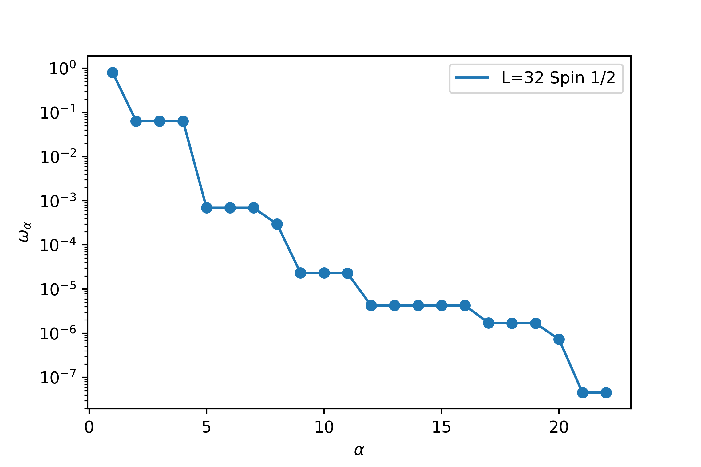
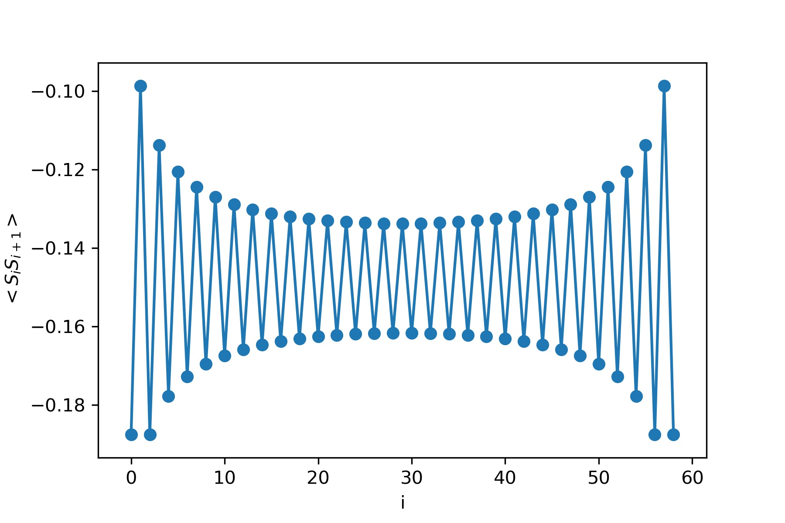
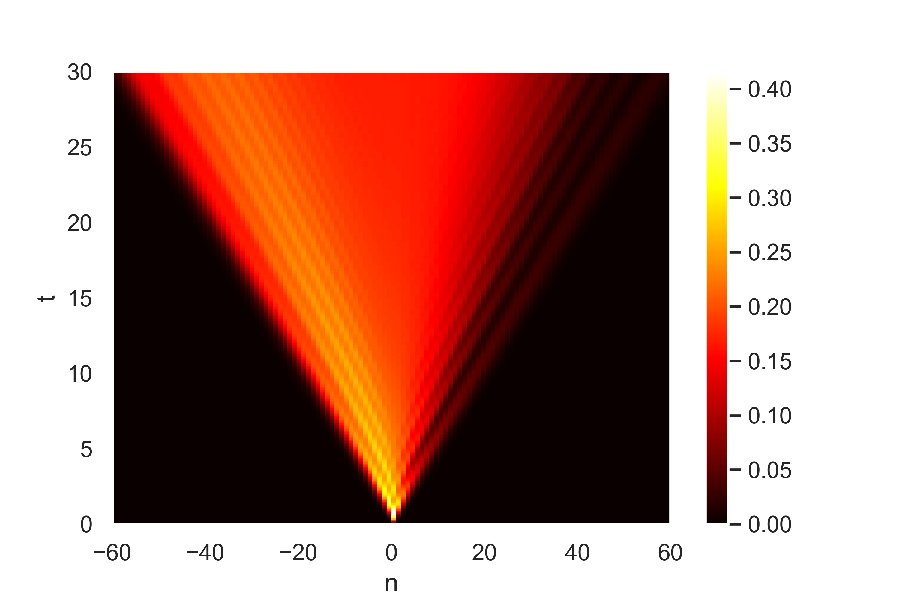
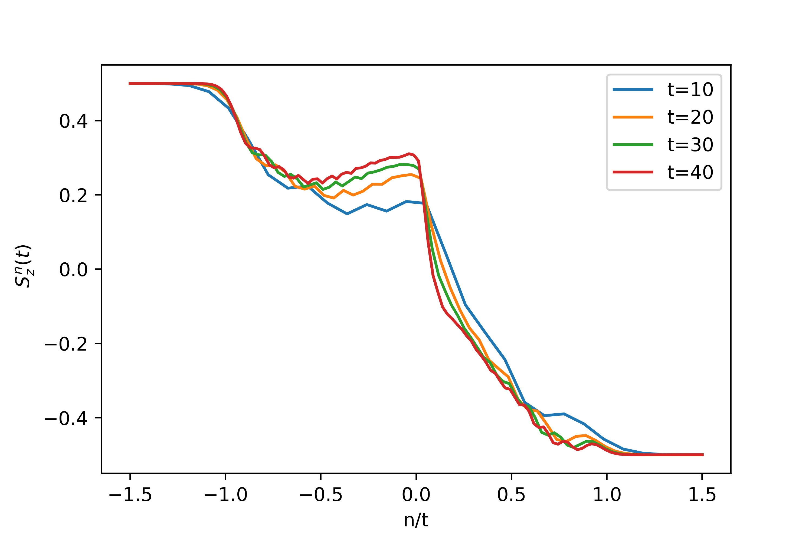
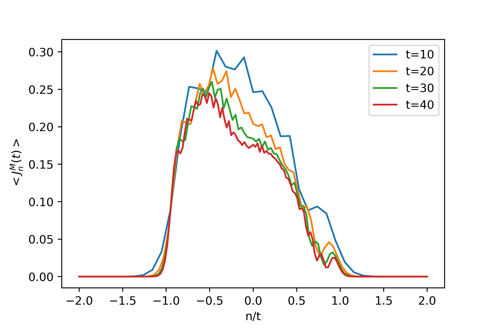
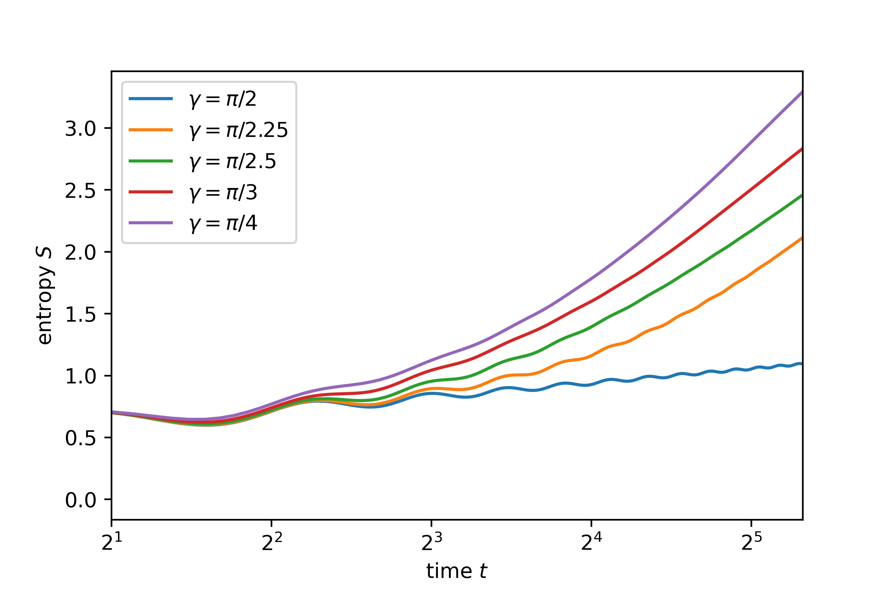

Quantum quench in spin-chains
"The underlying physical laws necessary for the mathematical theory of a large part of physics and the whole of chemistry
are thus completely known, and the difficulty lies only in the fact that the exact application of these laws leads to equations
much too complicated to be soluble" - Paul Dirac
In principle, quantum mechanics could predict any desired property of matter provided, one can solve the relevant
quantum equations. However, these equations are often complicated and nearly impossible to solve for strongly cor-
related systems where many-body interactions play a vital role. Solving such many-body problems could get us new
insights into describing some exotic phase transition phenomenon, building a quantum computer, or high-temperature
superconductivity.
The computational resource required to solve many-body systems’ equations exceed any classical computer’s capacity—the
number of parameters needed for simulating the quantum system scale exponentially with system size. Feynman once
argued that a quantum system could become a computational resource. A quantum computer could simulate any complex
quantum system without experiencing the exponential slowdown that a classical computer would. Unfortunately,we do
not have a full-fledged quantum computer at our disposal. There are many techniques which are employed to solve
quantum many body problems like exact diagonalisations, density matrix renormalization group (DMRG) and tensor
networks like MPS, PEPS, MERA ,etc. The exact diagonalization technique consists essentially of exactly solving the
Schrodinger equation by brute force. However, soon it loses steam for large systems. DMRG approach is a bit different;
it essentially discards the high energy degrees of freedom, keeping only those that are more relevant in giving rise to
exotic physics. This way, it keeps checking on the dimensionality issue of Hilbert space. The recent developments in
tensor network based simulations of quantum many-body systems provide a new way to tackle the many-body problem.
Nowadays, tensor networks like MPS, PEPS and MERA are widely employed for study of quantum many-body system.
I started with the DMRG technique, which was invented in 1992 by Steven R. White [1] and it is nowadays the most
efficient method for 1-dimensional quantum many-body systems. I went through the literature of DMRG technique[1, 2,
4, 3]. I have worked out the calculations of Steve White’s paper[1]. Figure 1(a) shows the density matrix eigenvalues $\omega_{\alpha}$
for a 32 site system for open boundary conditions for S=1/2 targeting the only ground state. We can observe that $\omega _ {\alpha} $
falls rapidly, which makes it possible to obtain an accuracy of better than $10^{−7}$ , in this case keeping only m=20 states .
Figure 1(b) shows local bond strength $\langle S_i S_{i+1} \rangle $ for a 60 site system. The open boundaries cause strong alteration in
bond strength which decays very slowly. Figure 1(c) shows how ground state energy per site approaches the one given by Bethe ansatz for many spins.


 (a) Density matrix eigenvalue $\omega_{\alpha}$ with eigen-index $\alpha$ (b) Local bond strength for 60 sites spin - 1/2 chains (c) Energy per site with number of sites
with open boundary condition
(a) Density matrix eigenvalue $\omega_{\alpha}$ with eigen-index $\alpha$ (b) Local bond strength for 60 sites spin - 1/2 chains (c) Energy per site with number of sites
with open boundary condition
Figure 1: Plots related to the DMRG technique
Afterwards, I started the formalism of MPS[4] and TEBD [5] with TenPy[6] Python and ITensorJulia [7] library. I
have worked out the MPS and TEBD formalism of Tensor Network with self built python codes. I have studied the
dynamical properties of the transverse field Ising model. I have worked out spin transport [8]of domain wall problem
after quantum quench which I have described below
Hamiltonian $$H = \sum _n h_n$$
$$h_n = J(S_n^xS_{n+1}^x + S^y_{n}S^y_{n+1} + \Delta _n S_n^zS_{n+1}^z)$$
for n $\leq 0$, $\Delta _n = 0$ and for $n >0, \Delta_n = \Delta = \cos{\gamma}$
Initial State $|\psi\rangle$, $|\psi\rangle= \otimes _ n |\psi _n \rangle $
$|\psi _n \rangle = | \uparrow\rangle $ for $n \leq 0$ and$ |\psi _n \rangle = | \downarrow\rangle $ for $ n>0$


(a) space-time profile of spin current (b) Magnetization profile for $\gamma = \pi / 4$ and several values of time.


(c) spin current profile for $\gamma = \pi / 4$ and several value of time. (d) Time-dependence of the entanglement entropy of a system bipartition.
Figure 2: Plots related to the Spin Transport
In above quench, we study spin transport , and calculate the following quantities :
- the local magnetisation $\langle Sz_{n} \rangle$
- the associated spin current $< J^M _n (t) >= iJ(S^x_nS^y_{n+1} − S^y_nS^x_{n+1})$
- the bipartite entanglement entropy $S(t) = −T r(\rho_{lef t}ln(\rho_{lef t}))$
Refrences :
- S.R. White ,Phys. Rev. Lett. 69(1992),S.R. White,Phys. Rev. B 48 (1993)
- The density-matrix renormalization group U. Schollw ̈ock,Reviews of Modern Physics 77 (2005)
- Adrian E Feiguin,AIP Conference Proceedings1419,(2011)
- The density-matrix renormalization group in the age of matrix product states
U. Schollw ̈ock,Annals of Physics 326 (2011)
- Guifr ́e Vidal Efficient Classical Simulation of Slightly Entangled Quantum Computations. Phys. Rev. Lett. 91, 147902
(2003)
- Johannes Hauschild and Frank Pollmann, Efficient numerical simulations with Tensor Networks: Tensor Network
Python (TeNPy) arvix 1805.00055 (2018)
- Matthew Fishman and Steven R. White and E. Miles Stoudenmire, ITensor Software Library for Tensor Network
Calculations arXiv 2007.14822 (2020)
- Alberto Biellaet al. NATURE COMMUNICATIONS —https://doi.org/10.1038/s41467-019-12784-4